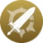
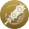
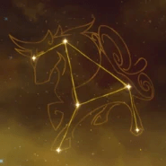

Arataki, muy activo en la zona de Hanamizaka de la ciudad de Inazuma ¿Nunca habias oido hablar de la Banda Arataki? ¿En serio?
Artefacto/s recomendados


Bono Geo

Bono Geo

Daño / Prob critico
DEF% > ATQ% > Daño/Prob critico
Talentos
 Pasivas
Constelación
Armas Recomendadas


Personajes compatibles